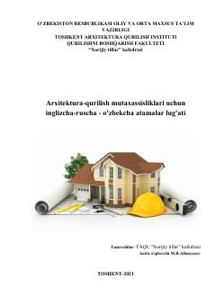

AMArxitektura va qurilish sohasiga oid uch tilli texnik atamalar lug'ati.
Ushbu lug'at Toshkent arxitektura-qurilish instituti talabalari va o'qituvchilari uchun mo'ljallangan texnik qo'llanmadir. Unda loyihalash, tuproq mexanikasi, qurilish fizikasi va muhandislik geologiyasi kabi sohalarga oid 2106 ta atamaning inglizcha, ruscha va o'zbekcha tarjimalari keltirilgan.